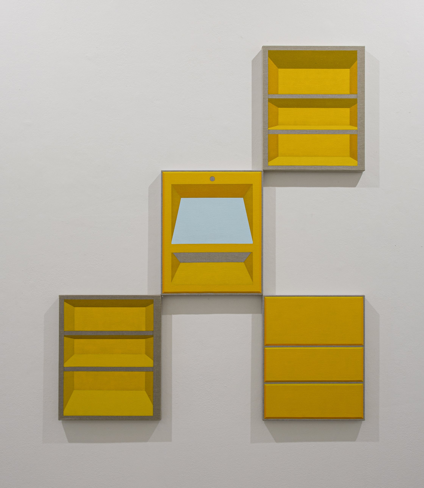

An exhibition of work by students on the PhD, MPhil and MRes programmes of the Royal College of Art’s School of Arts & Humanities, across the Lake and Dilston Galleries of Southwark Park Galleries. See the College’s page and the gallery’s.

Also shown in Woven Memory (2022).